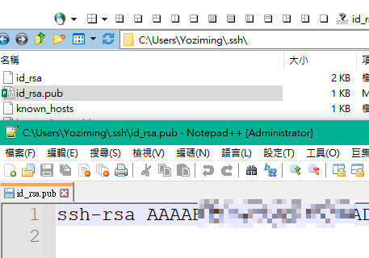
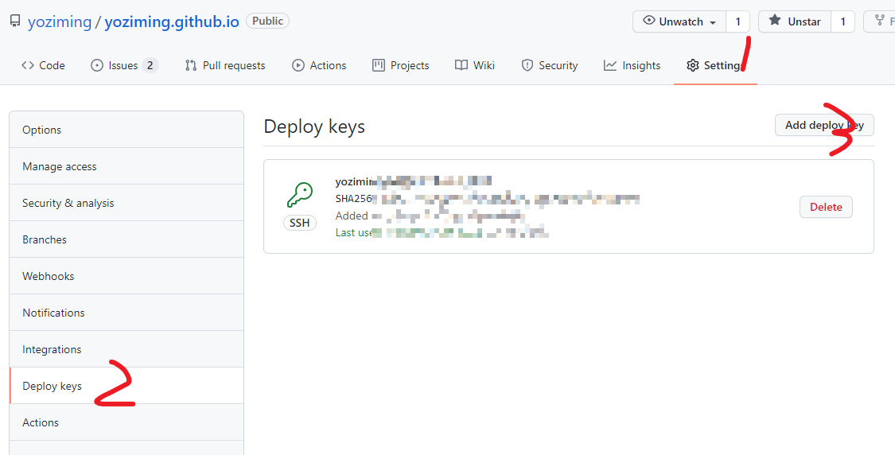
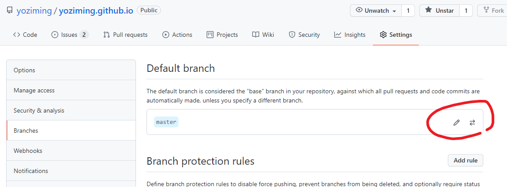
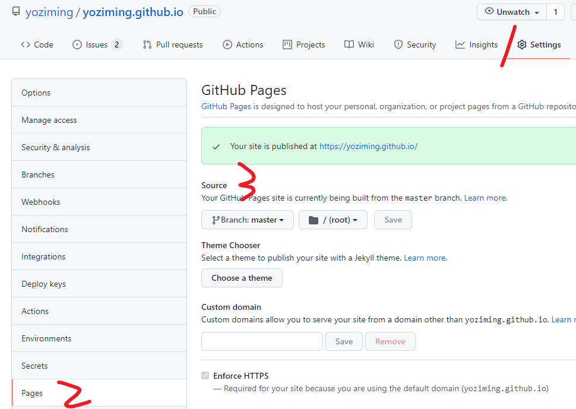
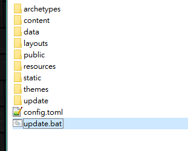

利用bat一鍵更新HugoBlog
方便快速有效
一鍵更新
-
透過.bat一鍵打包+git發布上傳到你的github專案倉庫
-
既然是個人的倉庫，首先要解決一個權限問題，否則隨便路人都可以亂上傳到你的倉庫豈不是亂套
-
作法簡單來說，在電腦本機生成一個key(一串暗號)，然後到github網頁上設定，約好拿這個key來的人就允許上傳
生成本機key
$ ssh-keygen # 產生金鑰
Generating public/private rsa key pair.
Enter file in which to save the key :
# 金鑰存放路徑，預設會放到我的文件/.ssh
# 放哪不是特別重要，有強迫症可以自己改，否則直接按Enter
Enter passphrase (empty for no passphrase): # 密碼，可設定可不設定，設定的話每次上傳會多需要輸入一次密碼
Enter same passphrase again: # 再輸入一次密碼
The key fingerprint is: # 之後會顯示你的 fingerprint，到這裡就完成 key 的產生了
將key報備到專案
- 到生成的路徑，找id_rsa.pub，右鍵筆記本編輯打開，會看到很長一行開頭是"ssh-rsa …………."，全選複製

- 回你的github專案

- 內容貼上剛剛複製的那行
- 自己給這個key起個名，懶得命名可以取剛剛那串最尾的"使用者@電腦"當名稱
建立批次執行檔
起一個.bat檔案，放在hugo的根目錄(跟config.toml同層)
@echo off
set pan=.\public\
set repo=git@github.com:yoziming/yoziming.github.io.git
set branch=master
if exist %pan% (
echo "clean public directory"
rd /S /Q %pan%
echo "Hugo again for new site"
hugo
) else (
echo "can not find public directory"
echo "Hugo again for new site"
hugo
)
if exist %pan% (
cd %pan%
echo "git init and commit"
git init
git add --all
git commit -m "update site at %time%"
echo "set remote repository and push forcely"
git remote add origin %repo%
git push -f origin master:master -v
) else (
echo "can not find public directory, hugo fail!"
)
pause
其中這2行要自己編輯
set repo=git@github.com:yoziming/yoziming.github.io.git
// 修改成你的用戶名
set branch=master
/* branch是倉庫裡的分支，預設有可能是main，這邊是用master
更改專案預設分支

更改個人頁面的資料來源

完成
以後更新只要執行這個bat瞬間就搞定

補充1
在末尾加入，增加上傳完畢等5秒自動關閉功能
echo "ALL DONE"
echo "ALL DONE"
echo "ALL DONE"
echo "waiting for auto exit..."
timeout /t 5
補充2
如果文章時間設在未來然後用draft控制是否顯示的，用-F可以強制把未來日期的文章也一併上傳
把有用到hugo指令的地方都改成
hugo -F
上次修改於 2021-12-01